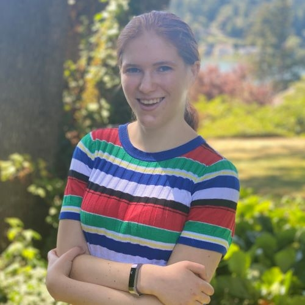

Meet our Directors
Sydney Von Arx
Uncommon Sense Director
I'm Sydney Von Arx, a computer science major at Stanford currently doing research under Fei-Fei Li in the Vision lab. I also help run Stanford Effective Altruism and work with the Stanford Existential Risks Initiative .
Devin Von Arx
Form and Function Director
I have always enjoyed computers. After many years of coding, I joined Bit by Bit in 2019 as a volunteer. Since then, I have helped run all three of our coding programs (middle school, high school, and summer). I currently coordinate the Form and Function after-school coding program. I want to help people see the beauty behind the binary in coding.

Cheyenne Huggins
Summer Programming Director
Learning about the world has been a passion of mine as I always wanted to understand the world around me. Coding has broadened my horizons bringing me many amazing opportunities such as volunteering with Bit by Bit, which I joined in the summer of 2020. Now, I coordinate our summer program, Hello World, to teach others about the wondrous world of coding.
Lucia Zhang
Operations Director
Hi! Compared to many people I know, I started coding pretty late due to an irrational fear of coding, but it has become one of my most intriguing hobbies. I joined Bit by Bit in 2020, working extensively to develop our Hello World summer camp. I currently direct BxB Central and hope to make it a strong community where students can learn, teach, and lead!
Meet our Leadership
Our leadership plays a crucial role in running smaller sections within BxB Central. They are the brains behind many of our organization's operations, training new volunteers, organizing their teams, and constantly improving what they do.
 Sophia Wang
Sophia Wang
Website
 Ellie Tanimura
Ellie Tanimura
Fundraising
Nira PatelHead of Human Resources
Jamie LiuDigital Marketing
Kisha PatelDigital Marketing
Kylie AboukhalilOutreach
 Jonathan Xie
Jonathan Xie
Neural Logical Co-Director
 Preston Hager
Preston Hager
Software
 Praveer Sharan
Praveer Sharan
Software